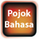

This section provides you with the resources you will need for Resensi. To start with, it is helpful to study the useful terms and vocabulary in Pojok bahasa.
Select a link below to discover more.
Affixes
Resensi film
Review elements
Di-verbs
Describing with 'me-kan'
Conjunctions